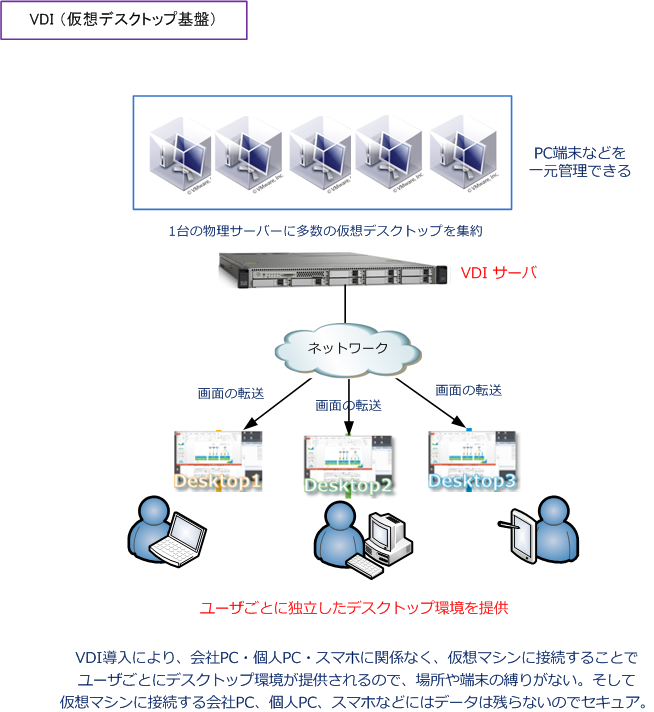
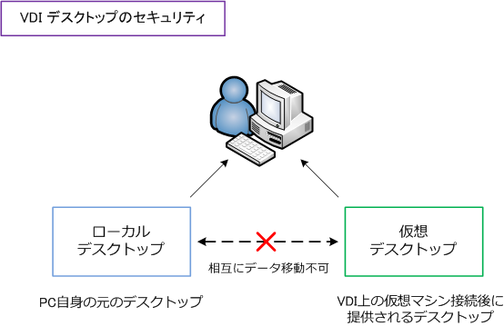
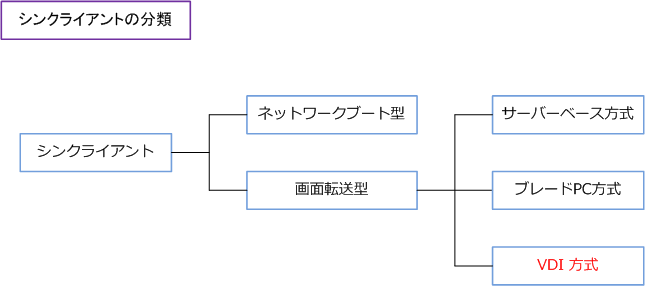
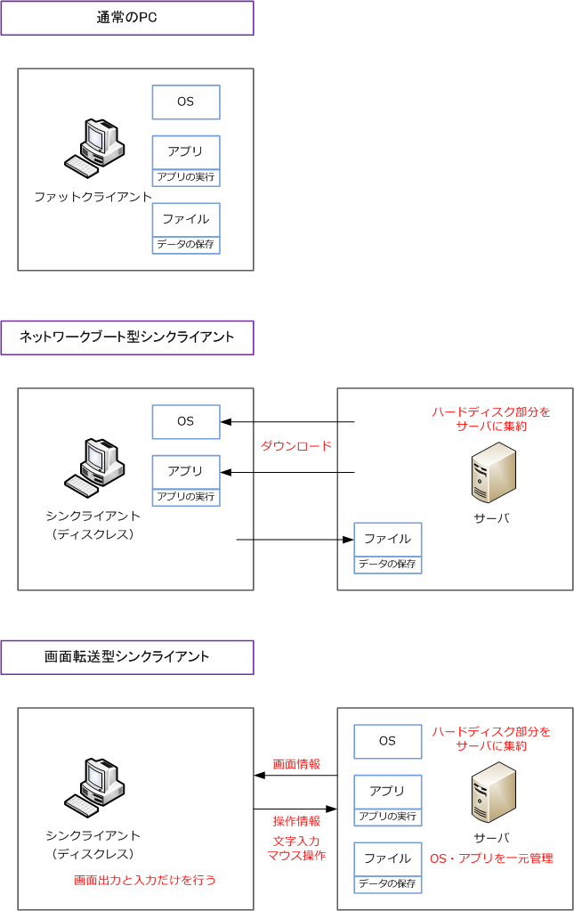
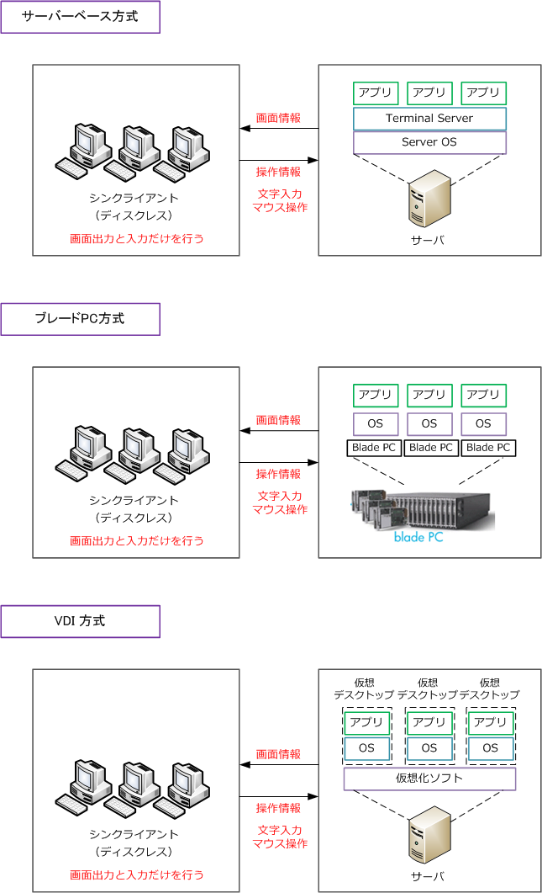

VDI （Virtual Desktop Infrastructure）
VDI（Virtual Desktop Infrastructure）とは
VDI（仮想デスクトップ基盤）とは、デスクトップ環境を仮想化させて、パソコンのデスクトップ環境を サーバ上に集約してサーバ上で稼働させる仕組みのことです。利用者はクライアントPCからネットワーク 経由で仮想マシンに接続して、デスクトップ画面を呼び出した上で操作します。なお、VDIという用語は 仮想デスクトップ基盤、仮想デスクトップインフラ、デスクトップ仮想化などと呼ばれています。
VDIではサーバ上に利用者数に見合う多数の仮想マシンを実装して、それぞれにデスクトップOSやアプリを インストールするため、従来のような利用者ごとのPCにOSやアプリをインストールする形式にくらべると サーバ上で集中管理することから各種ソフトウェアの追加や更新などのメンテナンスが容易になるメリット があります。また、どのパソコンからでも自分用のデスクトップ環境を呼び出して利用できるので、例えば 職場環境においてフリーアドレスを容易に実現したり、在宅勤務が実現しやすくなります。

VDIの最大のメリットは情報漏洩のリスクが軽減されることです。VDIでは通常はパソコン側で行う処理を サーバ側で行います。利用者のクライアント機（パソコン・タブレット・スマホなど）には、サーバ上で 実行されているデスクトップ環境の画面だけが転送されるので、手元のパソコン等にはデータを保管しない ことになりUSBディスクなどを利用したデータ流失のリスクを軽減することができます。
下図の通り、仮想デスクトップ上にあるデータをローカルデスクトップ上に移動することはできませんし、 ローカルデスクトップ上にあるデータを、仮想デスクトップへ移動することもできないのでセキュアです。

なお、VDIでの利用者の端末は、キーボード入力を受け付けてネットワーク経由でサーバに送信することと デスクトップ画面を受信してディスプレイに表示することができれば良くPC側の機能を最小限にできるので VDIを導入する場合には、通常のPCよりも安価な専用のシンクライアント端末を導入できる場合もあります。
シンクライアントとVDIの違い
VDIはシンクライアントの実装方式の1つです。シンクライアントとは、プログラム実行やデータ保存などの 機能をクライアント端末から分離させてサーバに集中させるアーキテクチャのことです。シンクライアントは ハードディスクなどの記憶装置を搭載せずに、処理はサーバ側で行われてデータもサーバ側に保存されます。
シンクライアントは2タイプに分類することができ、画面転送型は次の3つの方式に分類することができます。

ネットワークブート型
クライアント端末がサーバに保存したイメージファイルをネットワーク経由でダウンロードして、OSや アプリを実行する方式です。画面転送型とは異なり、クライアント端末側のCPUやメモリーを使用する ことから、ネットワーク経由でのブート後は通常のPC端末と同じような感覚で高速な動作を実現します。
また、クライアント端末にハードディスクを持たせず全てのデータをサーバ上に保存するため、情報漏洩 のリスクを軽減します。デメリットとしては、ネットワーク経由でブートすることから、広帯域なネット ワークと十分なサーバーリソースが必要となる点、ブートに時間がかかる点が問題点として挙げられます。
画面転送型
OSやアプリをサーバ側で実行して、クライアント側ではその結果の画面出力を指せる方式です。サーバと クライアント間では画面情報と操作情報だけをやり取りします。画面転送型では、ネットワークブート型と 同様にクライアント端末にハードディスクを持たせず全てのデータをサーバ上で保存するため、情報漏洩の リスクを軽減します。また、 OSやアプリをサーバ上で集中管理できることから各種ソフトウェアの追加や 更新などのメンテナンスが容易になります。また、画面情報はサイズが小さいためネットワークブート型の ように広帯域なネットワークは必要としません。
ところでシンクライアントのシンは英語の「thin」であり「薄い・細い」という意味となりますが、通常の PCと比較して機能を最小限にしたクライアントということになります。thinの対義語が「fat」が近いこと から、シンクライアントと比較する際に、通常のPCのことをファットクライアントと呼ぶ場合があります。 下図は、通常のPC、ネットワークブート型シンクライアント、画面転送型シンクライアントの比較です。

画面転送型シンクライアントには、サーバーベース方式、ブレードPC方式、VDI方式の3種類がありますが 現在主流なのはVDI（仮想デスクトップ基盤）方式です。それぞれの方式の違いを以降で説明していきます。
画面転送型シンクライアント：サーバベース（SBC）方式
サーバーベース方式は、「SBC方式」または「ターミナルサーバ方式」とも呼ばれています。この方式では、 サーバにアプリをインストールして実行し複数のユーザで共有します。なお、Microsoft Officeなどアプリが マルチユーザアクセスに対応している必要があります。あるユーザが負荷の高い処理を発生させた場合には 同時アクセスしている他の利用者も影響を受けます。ユーザにとっては独立環境ではないことも問題点です。
画面転送型シンクライアント：ブレードPC方式
ブレードPC方式では、ユーザごとに「ブレードPC」と呼ばれる物理リソースを割り当てる方式です。この 方式ではユーザごとに1台のマシンを占有できることから、アプリの互換性が高く移行が比較的容易である点、 高い負荷業務に適している点などのメリットがありますが、ユーザごとに1ブレードが必要であるため非常に コストがかかる問題点があります。
画面転送型シンクライアント：VDI 方式
VDI方式では、仮想化ソフトを使用してサーバ上にクライアントごとの仮想環境を構築できる方式です。 ブレードPC方式ではユーザ数の分だけブレードPCを用意する必要がありましたが、VDI方式ではユーザ数 の分だけ仮想マシンを用意すれば良いだけなのでコスト面で大きなメリットがあります。また、独立した 環境がユーザごとに用意されるため、サーバーベース方式のように特定のユーザの処理が全てのユーザーに 影響しないというメリットもあります。このVDI方式が現在主流な方式となります。

仮想デスクトップを実現するソフトウェアには、VMware社の「VMware Horizon」、シトリックス社の 「Citrix XenDesktop」、マイクロソフト社の「Microsoft VDI」などがあります。